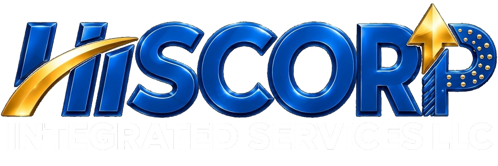

Local Expertise
Grounded in Kismayo and the Jubaland operating environment, with an understanding of local delivery realities.

THE HISCORP DIFFERENCE
Professional standards, local understanding and a delivery-focused mindset.
A DEPENDABLE PARTNER
HISCORP brings together services and practical operational knowledge to support organizations working across the region.
Grounded in Kismayo and the Jubaland operating environment, with an understanding of local delivery realities.
Clear communication, accountable working practices and an emphasis on dependable delivery.
Multiple service capabilities coordinated through one partner to simplify operational requirements.
A multidisciplinary approach drawing on construction, logistics and corporate operations expertise.
Solutions shaped around project goals, requirements and the needs of each engagement.
Safety, quality and honesty guide our approach to service delivery and professional relationships.